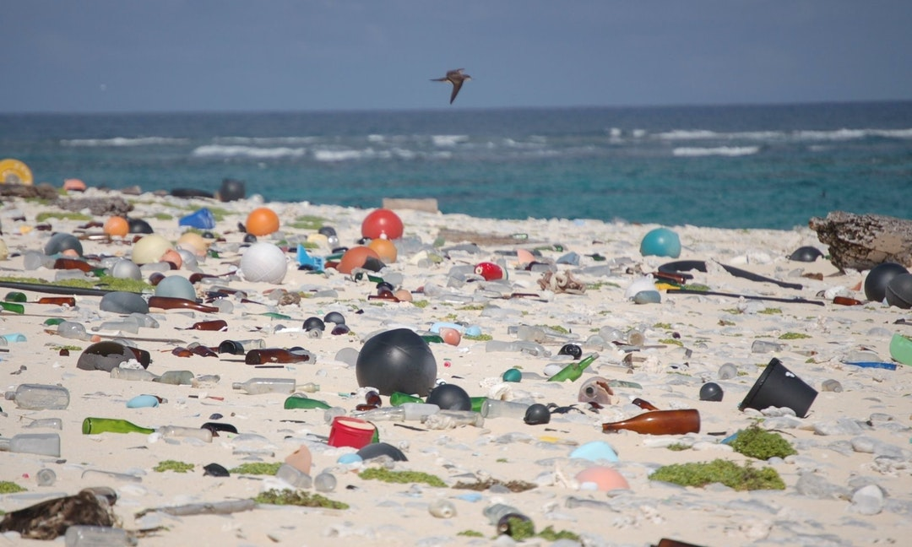
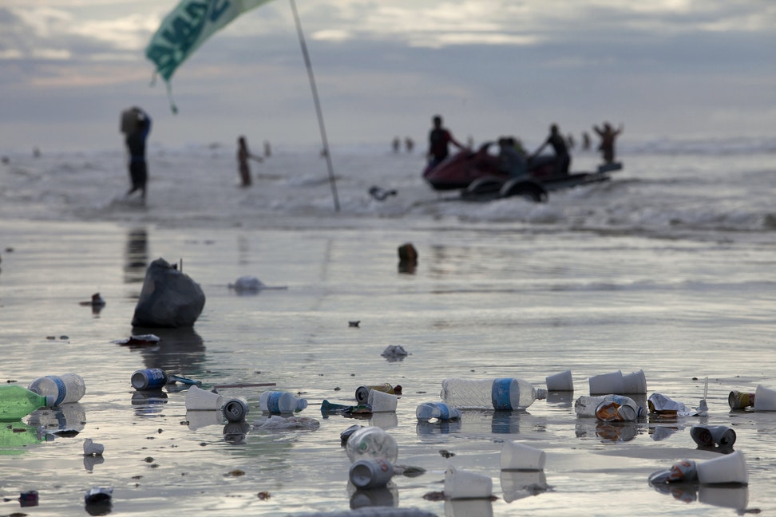

This is a paragraph. In the past 10 years, the death rate of marine organisms due to garbage has increased by 40%, and "plastic" is the most lethal. Most of the plastic rubbish that human tourists throw away at the beach can't break down transparent plastic fragments or glass fragments in the sea to reflect sunlight, which makes seabirds mistake it for food. For marine creatures who do not know human garbage, all man-made articles drifting on the sea are dangerous to them. In order to clean the sea and protect marine life, let's transform the world with consumption Rubbish that has not been properly buried or incinerated, or cigarette butts that have been discarded, will be washed by wind and rain into drainage ditches, streams and rivers, and will eventually flow into the sea,Humans should start to change their living habits completely. We can reduce the quantity of plastic products from the source, wash and reuse them, carry personal tableware with us, and refuse to go to stores that use disposable containers/tableware for consumption. Let's start now Reduce the use of plastic articles Clean the beach and pick up the seaside garbage from the nearest beach https://youtu.be/XHzWuepPNnY
text about the image
text about the image
text about the video
text about the audio
Credits: Smith, John. “Image Stand In” Flickr. Yahoo! Web. 7 Apr. 2011
Copyright © 2022 Your Name - All Rights Reserved